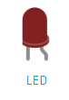
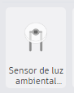
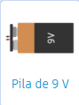
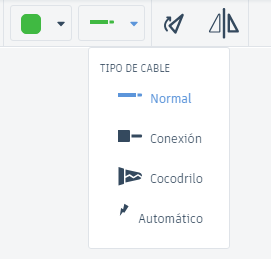

Circuitos Electrónicos
Controlar un LED con un Sensor de Luz
Componentes necesarios:
| 1. LED: Diodo emisor de luz. |  |
| 2. Resistor: Para limitar la corriente (220 ohmios). | |
| 3. Sensor de Luz (LDR): Resistor dependiente de la luz. |  |
| 4. Transistor: Para amplificar la señal del sensor. | |
| 5. Batería: Fuente de alimentación (por ejemplo, 9V). |  |
| 6. Cables: Para realizar las conexiones. |  |
Pasos a Seguir:
1. Abrir Tinkercad:
Ve a Tinkercad y crea un nuevo proyecto.
2. Agregar Componentes:
En la sección de "Componentes", arrastra los siguientes elementos al área de trabajo:
Un LED.
Un Resistor (220 ohmios).
Un Sensor de Luz (LDR).
Un Transistor (por ejemplo, NPN).
Una Batería de 9V.
3. Conectar los componentes:
Conecta el terminal positivo del LDR a la batería.
Conecta el terminal negativo del LDR a la base del transistor.
Conecta el emisor del transistor al terminal negativo de la batería.
Conecta el colector del transistor al terminal negativo del LED.
Conecta el terminal positivo del LED al resistor y luego al terminal positivo de la batería.
4. Simular el circuito:
Haz clic en el botón de "Iniciar Simulación".
Cubre el LDR con algo oscuro o ilumínalo para ver cómo el LED se enciende o apaga según la luz.